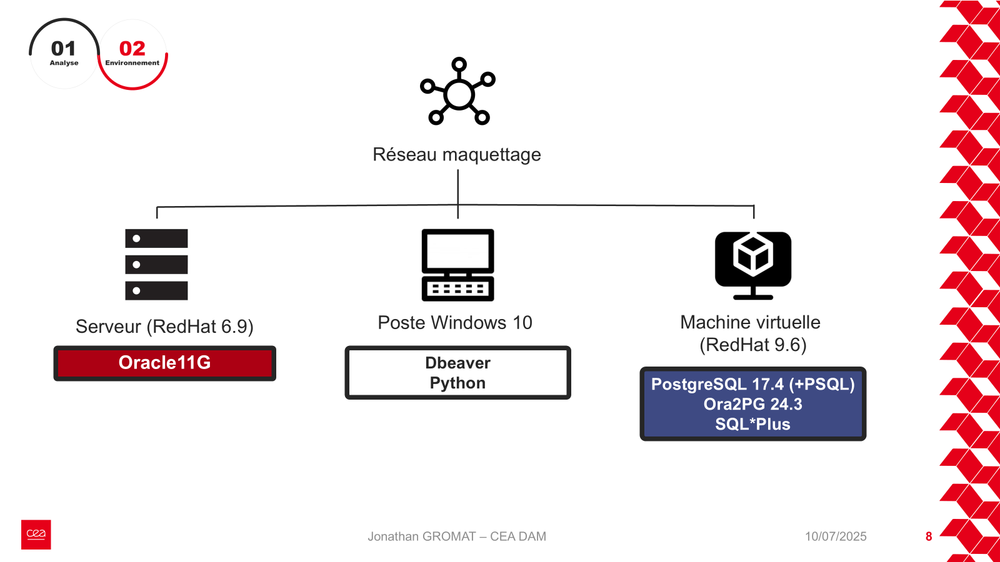

Parcours BUT Informatique – Spécialisation Gestion et Exploitation des Données Objectif : Démontrer l’acquisition des compétences AC34, AC35, AC36 à travers des projets concrets
Gérer
Concevoir, gérer, administrer et exploiter les données de l’entreprise et mettre à disposition toutes les informations pour un bon pilotage de l’entreprise
AC34.01 – Capturer et stocker des ensembles volumineux et complexes de données hétérogènes
SAE Pharmaguide/MedicSearch (S5-S6) – Projet principalJ'ai conçu une architecture multi-bases, en modélisant une donnée brute JSON complexe en un graphe Neo4j exploitable, comme le montre cette preuve.
Modélisation composite MongoDB/Neo4jArchitecture relationnelle sous PostgreSQL
R5 C 05 - BD NoSQLLa première image montre l'import de 40 000 routes aériennes dans Neo4j. La seconde prouve l'import d'un dataset volumineux de restaurants à New York.
R6 C 05 - Administration des bases de donnéesLa capture d'écran montre la création d'une table de test de 1 262 493 lignes sur Oracle.
Table de test avec 1 262 493 lignes
R5 C 11 - Optimisation des données et des systèmesLe premier schéma montre un modèle en étoile pour l'analyse de données de pollution. Le second schéma illustre un modèle en flocon avec normalisation des dimensions.
Conception d'un modèle en étoileConception d'un modèle en flocon
AC34.02 – Préparer et extraire les données pour l'exploitation
Stage S6 – Validation des donnéesPour garantir une migration parfaite lors de mon stage S6, j'ai développé un script Python de validation par hachage MD5. Cette preuve montre le résultat du script confirmant l'intégrité des données.
Validation de l'intégrité des données par script Python
SAE Pharmaguide/MedicSearch (S5-S6) – Projet principalLa requête Cypher ci-dessous extrait les relations entre médicaments et effets indésirables dans Neo4j.
Requête d'extraction Cypher sur Neo4j
R6 C 05 - Administration des bases de donnéesLa capture d'écran montre le code de la procédure PL/SQL RETROCONCEVOIR utilisée pour l'extraction et la transformation de données.
Procédure PL/SQL RETROCONCEVOIR
AC34.03 – Appliquer des méthodes d'exploration et d'exploitation des données
R5 C 08 - Techniques d'intelligence artificielle – Projet principalLe premier visuel montre un k-NN avec validation croisée (accuracy 96.67%). Le second affiche la matrice de confusion du modèle LDA. Le troisième compare les performances de 5 modèles (accuracy, precision, recall).
k-NN avec validation croisée (accuracy: 96.67%)Matrice de confusion du modèle LDAComparaison des performances de 5 modèles
R5 C 07 - Données massivesLes graphiques montrent la projection ACP 2D et 3D de jeux de données (Leaf, Wine) pour l'identification de clusters.
Projection ACP 2D avec clustering (dataset Leaf)Projection ACP 2D avec clustering (dataset Wine)Visualisation ACP en 3D
R5 Admin 06 - Exploitation de la base de donnéesLa première image montre une opération de 'drill-down' sur les produits boisson. La seconde prouve une analyse croisée multi-dimensionnelle (produits/genre).
Opération de 'drill-down'Analyse croisée multi-dimensionnelle
SAE Pharmaguide/MedicSearch (S5-S6)La visualisation du graphe Neo4j ci-dessous montre l'exploration des relations complexes entre entités médicamenteuses.
Exploration visuelle du graphe Neo4j
AC34.04 – Mettre en production et optimiser le système de gestion de données
Stage S6 – Optimisation de performanceJ'ai réalisé le tuning du serveur PostgreSQL post-migration. Cette preuve montre les commandes ALTER SYSTEM que j'ai utilisées pour ajuster les paramètres (shared_buffers, work_mem) selon les specs du serveur.
Optimisation PostgreSQL (ALTER SYSTEM), extrait de mon rapport de stage S6, pas une image pour soucis de confidentialité
R5 C 05 - BD NoSQLLa première image montre le statut opérationnel d'un cluster Cassandra multi-nœuds. La seconde prouve le déploiement d'un cluster distribué avec Docker.
Vérification du statut du cluster CassandraDéploiement d'un cluster multi-nœuds
Conduire
Satisfaire les besoins des utilisateurs au regard de la chaîne de valeur du client, organiser et piloter un projet informatique avec des méthodes classiques ou agiles
AC35.01 – Mesurer les impacts économiques, sociétaux et technologiques
Stage S6 – Analyse des impactsJ'ai évalué les impacts de la migration Oracle vers PostgreSQL, notamment en termes de coûts de licence et de performance. Initialement, les coûts de licence étaient à 80 000 € par an, et la migration vers PostgreSQL permet de réduire les coûts à 0 €.
Pas de preuves en image
AC35.02 – Savoir intégrer un projet informatique dans le système d'information
SAE Pharmaguide/MedicSearch (S5-S6) – Projet principalJ'ai conçu une architecture multi-technologies (graphe et relationnel), comme le montrent les schémas ci-dessous. Cette approche prouve la réflexion sur l'intégration dans un SI complexe, où différentes technologies cohabitent pour répondre à des besoins variés.
Intégration d'une base grapheIntégration d'une base relationnelle
AC35.03 – Savoir adapter un système d'information
Stage S6 – Plan de projetJ'ai accompagné le projet en m'adaptant au SI existant.

Schéma technique du réseau et SI
Collaborer
Acquérir, développer et exploiter les aptitudes nécessaires pour travailler efficacement dans une équipe informatique
AC36.01 – Organiser et partager une veille technologique
SAE Pharmaguide/MedicSearch (S5-S6) – Projet principalLe schéma de données ci-dessous montre l'application de Neo4j, sélectionné suite à une veille technologique sur les bases de graphes.
Application de la technologie Neo4j issue de la veille
AC36.02 – Identifier les enjeux de l'économie de l'innovation numérique
Stage S6 – Enjeux économiquesLe projet de migration avait un enjeu économique direct : la réduction des coûts de licence en passant d'Oracle à PostgreSQL. Mon travail a contribué directement à cet objectif stratégique.
Enjeux économiques du projet de migration
R6 C 05 - Administration des bases de donnéesLa création d'une table de test de 1,2 million de lignes a permis d'évaluer les coûts de stockage et les enjeux de performance liés à la volumétrie.
Analyse de la volumétrie (1.2M lignes) et de ses impacts
AC36.03 – Guider la conduite du changement informatique
Stage S6 – Documentation d'exploitationJ'ai guidé le changement en produisant une documentation d'exploitation complète de 34 pages. Ce livrable est un outil essentiel pour permettre aux équipes de comprendre, reproduire et maintenir la solution.
Page de garde du document d'exploitation
AC36.04 – Accompagner le management de projet informatique
Stage S6 – Plan de projetJ'ai accompagné le management du projet en suivant un plan structuré avec des échéances. Ce schéma, que j'ai réalisé et suivi, prouve ma capacité à organiser un projet complexe et à en gérer les différentes phases.
Schéma technique du plan de projet
SAE Pharmaguide/MedicSearch (S5-S6) – User storiesLa capture d'écran ci-dessous montre la liste des user stories implémentées pour la version finale du projet, preuve concrète de la planification et du suivi des fonctionnalités.
User stories pilotant l'évolution du projet
Conclusion & Perspectives
Ce parcours m’a permis d’acquérir une expertise complète, de la gestion technique de la donnée à l’intégration et au management de projets SI. Les projets menés, notamment MedicSearch et l’administration avancée Oracle, illustrent ma capacité à relever des défis techniques, à innover et à accompagner le changement. Je me sens prêt à assumer des responsabilités techniques et managériales, et à poursuivre mon évolution dans des environnements exigeants et innovants.
/image.png)
/Capture_decran_2025-01-25_a_23.17.45.png)


/Capture_decran_2025-01-14_a_22.11.50.png)


/Capture_decran_2025-01-26_a_14.53.23.png)


/Capture_decran_2025-01-14_a_21.31.31.png)


/userstories.png)